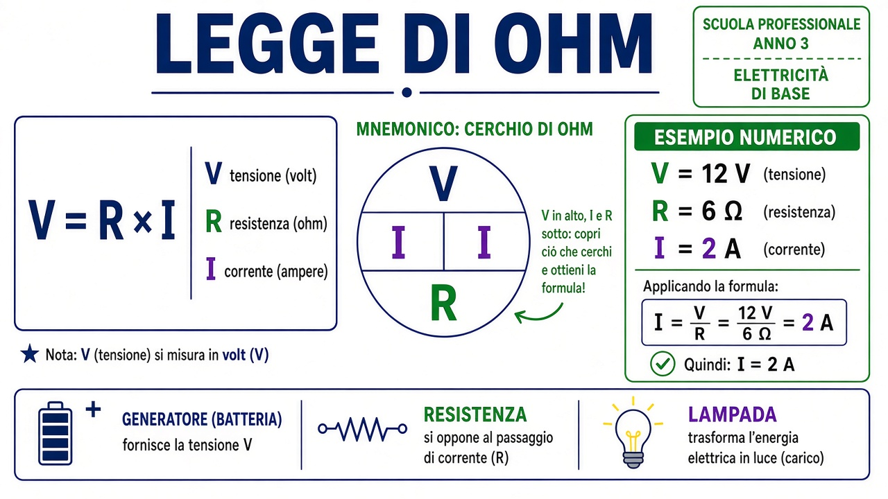

Legge di Ohm
Formula e grandezze
V = R × I
| Simbolo | Grandezza | Unità |
|---|---|---|
| V | Tensione (differenza di potenziale) | volt (V) |
| I | Corrente (flusso di cariche nel circuito chiuso) | ampere (A) |
| R | Resistenza (oppone al passaggio della corrente) | ohm (Ω) |
Mnemonico: V in alto, I e R sotto — copri la grandezza che cerchi e ricavi la formula (cerchio di Ohm).
Poster

Esempio numerico (passo passo)
- Batteria: tensione V = 12 V.
- Carico (es. lampadina modello semplice): resistenza R = 6 Ω.
- Cerco la corrente: I = V ÷ R = 12 ÷ 6 = 2 A.
Se R aumenta (filamento più resistivo, filo più lungo…) a pari V, la corrente I di solito diminuisce — la lampadina può accendersi meno forte.
Legame con la lampadina
La lampadina è un carico: il filamento ha una resistenza R. Con interruttore chiuso e generatore acceso, V e R fissano quanta corrente I passa e quanto si scalda il filamento. Vedi anche resistenza elettrica e circuito chiuso.
Esercizi
1. V = 12 V e R = 4 Ω. Quanto vale I?
Soluzione (docente)
I = V / R = 12 / 4 = 3 A.2. Stessa tensione V: se R raddoppia, la corrente I aumenta o diminuisce?
Soluzione (docente)
Diminuisce (inversamente proporzionale: più resistenza → meno corrente a pari V).Realizzato dal Prof. Rossano Bella